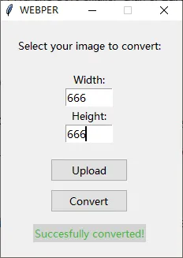

What is WebPer?
WebPer is a simple tool to convert images to WebP format. It is a lossless image format that is 20% smaller than PNG and 80% smaller than JPEG. It is also faster to load than JPEG and PNG. WebP is supported by all modern browsers.
What problems does WebPer solve?
Unlike other tools, WebPer is super lightweight and does its jobs with only few steps possible. It's extremely useful when you just want to change the format and size of an image and quickly use it in your website.
Comparing to online tools and other softwares, WebPer is super easy to use.
How to use WebPer?
You can convert a image to WebP format in as little as 3 clicks using WebPer.
Firstly, you will need to click on Upload to upload the image that you want to convert.
Optionally, you can change the size of the image. Change either the width or the height to change the size of the image, the ratio will stay unchanged.
Click Convert, then BOOM you will see the converted image in the same directory as the original image.
WebPer Advantages
- SUPER easy to use
- Lightweight (28.5 MB)
- Fast (Less than 0.5 seconds converting time on most PC)
- All-in-one application
Download WebPer
Click here to download WebPer.
Future Updates?
I'm planning to add more features to WebPer in the future, such as bulk image convert, dynamic width/height display, and more.
I hope you enjoy. Thanks for reading the post!